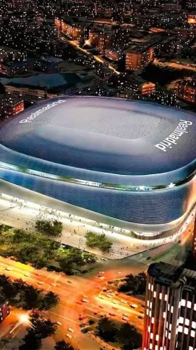

Santiago Bernabéu Stadium
Location: Madrid, Spain
Opened: December 14, 1947
Capacity: ~85,000
Owner: Real Madrid CF
Pitch Type: Retractable Grass

About the Stadium
The Santiago Bernabéu Stadium is the iconic home arena of Real Madrid. Named after the legendary club president Santiago Bernabéu, it is recognized as one of the most famous and prestigious football venues in the world. Having undergone massive state-of-the-art modernizations, including a retractable roof and pitch system. The stadium now stands as a multi-purpose architectural marvel capable of hosting global sporting events, concerts, and entertainment spectacles.
Key Features & Innovations
- 🏟️ State-of-the-art Retractable Roof
- 🌿 Innovative Retractable Pitch System
- 🔄 360-degree Video Scoreboard
- ⭐ UEFA Category 4 Stadium